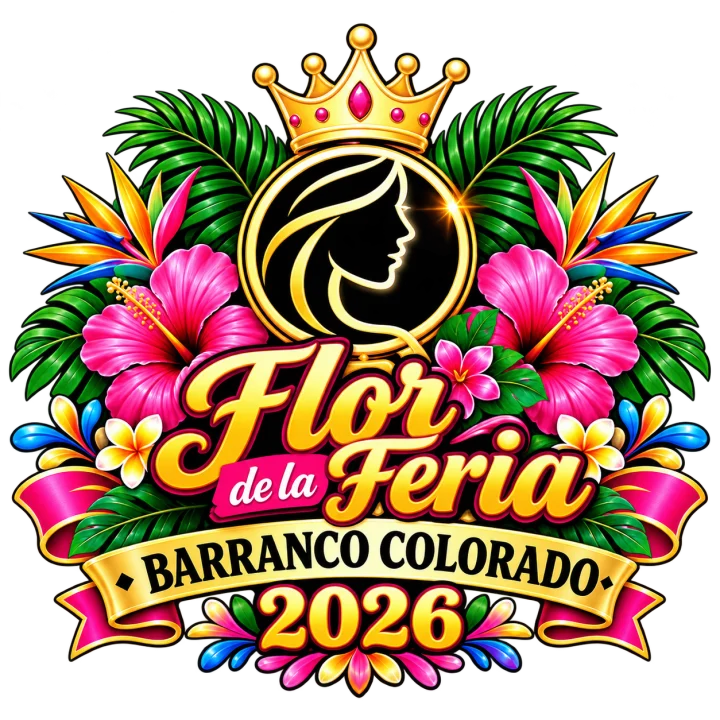

Feria Patronal 2026
Programa oficial
Del 21 al 25 de octubre de 2026
Barranco Colorado, San Jorge, Zacapa
Filtra las actividades: toca un día para ver solo las de ese día
Muy pronto compartiremos el programa de la feria.

Nuestras reinas
Pronto conocerás a las candidatas a Flor de la Feria 2026.